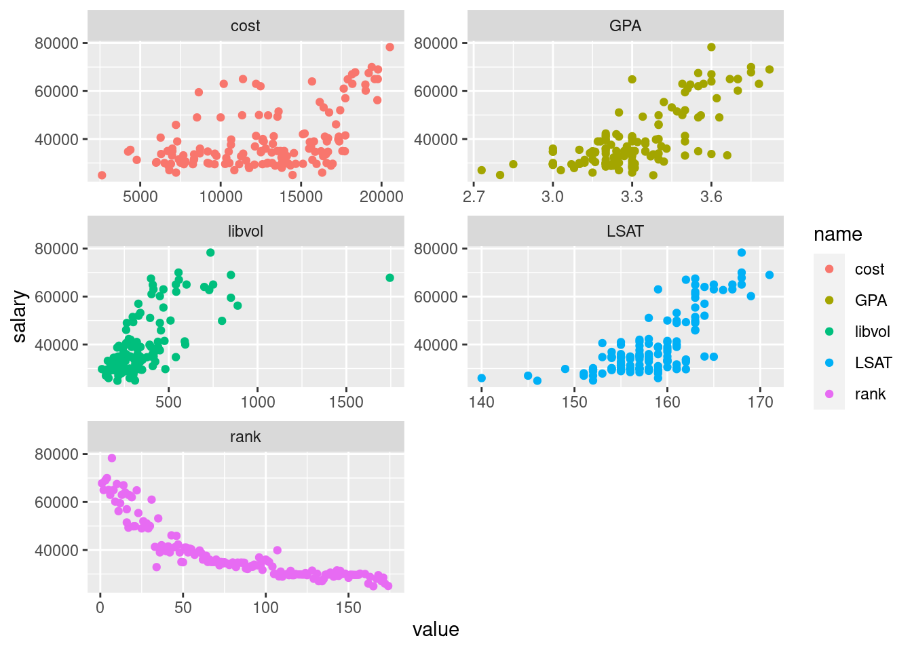

library(tidyverse)
library(tidymodels)
library(wooldridge)
data("lawsch85")
df <- lawsch85
df %>%
select(salary, LSAT, GPA, libvol, cost, rank) %>%
pivot_longer(-salary) %>%
ggplot(aes(x = value, y = salary, color = name)) +
geom_point() +
facet_wrap(~ name, ncol = 2, scales = "free")## Warning: Removed 58 rows containing missing values (geom_point).
library(knitr)
lm_mod <- linear_reg() %>%
set_engine("lm")
lm_fit <- fit(lm_mod, log(salary) ~ LSAT + GPA + log(libvol) + log(cost) + rank, data = df)
tidy(lm_fit) %>% kable()| term | estimate | std.error | statistic | p.value |
|---|---|---|---|---|
| (Intercept) | 8.3432262 | 0.5325192 | 15.667464 | 0.0000000 |
| LSAT | 0.0046965 | 0.0040105 | 1.171045 | 0.2437229 |
| GPA | 0.2475238 | 0.0900371 | 2.749133 | 0.0068262 |
| log(libvol) | 0.0949932 | 0.0332544 | 2.856565 | 0.0049877 |
| log(cost) | 0.0375539 | 0.0321061 | 1.169682 | 0.2442689 |
| rank | -0.0033246 | 0.0003485 | -9.540787 | 0.0000000 |